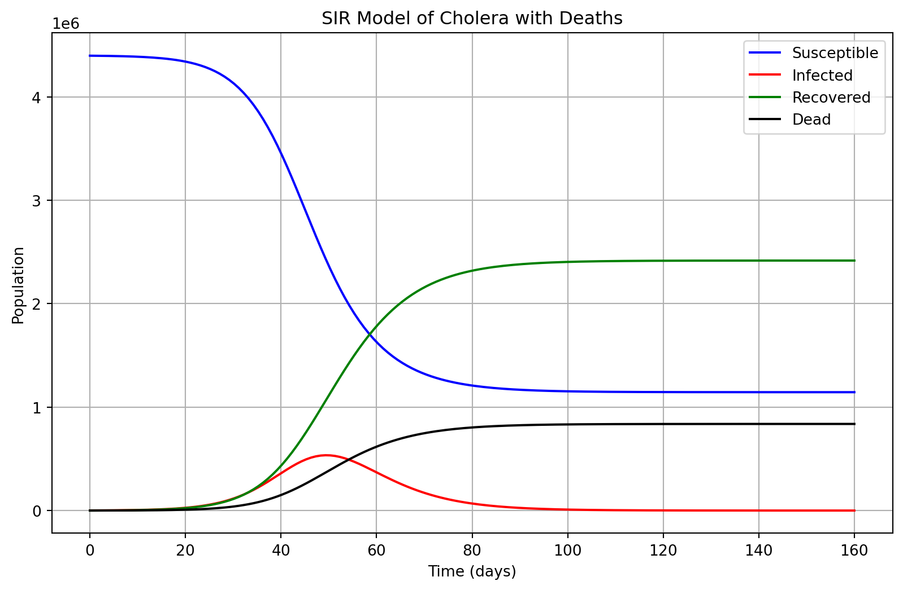

SIR Model with Deaths for Cholera in Nairobi
0.1 Introduction
This document describes the SIR model with deaths applied to the cholera outbreak in Nairobi, Kenya, using a manual approach without the aid of Python code. We use initial outbreak data, calculate the basic reproduction number ( R_0 ), and estimate the percentage of the population that needs to be vaccinated to achieve herd immunity.
0.2 Modeling the SIR Model with Deaths
The SIR model divides the population into four compartments:
- Susceptible (S): Individuals who can contract the disease.
- Infected (I): Individuals who have contracted the disease and can transmit it.
- Recovered (R): Individuals who have recovered from the disease and gained immunity.
- Deceased (D): Individuals who have died from the disease.
The system of differential equations governing the dynamics of the disease is:
\[ \frac{dS}{dt} = - \beta \frac{S I}{N} \]
\[ \frac{dI}{dt} = \beta \frac{S I}{N} - \gamma I - \mu I \]
\[ \frac{dR}{dt} = \gamma I \]
\[ \frac{dD}{dt} = \mu I \]
Where ( N = S + I + R + D ) is the total population. The parameters are: - ( ): Transmission rate of the disease. - ( ): Recovery rate (inverse of the recovery period). - ( ): Death rate due to the disease.
0.3 Model Parameters
For the cholera outbreak in Nairobi, the following initial conditions were used:
- Total population ( N = 4,400,000 )
- Initial infected individuals ( I_0 = 1,172 )
- Initial recovered individuals ( R_0 = 0 )
- Initial deaths ( D_0 = 58 )
- Initial susceptible population ( S_0 = N - I_0 - R_0 - D_0 = 4,398,770 )
- Recovery rate ( = 1/7 = 0.14286 )
- Death rate ( = 0.04949 )
0.4 Calculating ( R_0 )
The basic reproduction number ( R_0 ) is given by:
\[ R_0 = \frac{\beta}{\gamma} \]
Using an estimated transmission rate of ( = 0.35 ) (based on observed data) and a recovery rate of ( = 0.14286 ):
\[ R_0 = \frac{0.35}{0.14286} \approx 2.45 \]
This ( R_0 ) value suggests that, on average, each infected individual will spread the disease to 2.45 others.
0.5 Calculating the Percentage of the Population to be Vaccinated
The percentage of the population required to be vaccinated to achieve herd immunity is calculated using the following formula:
\[ \text{Herd Immunity Threshold} = 1 - \frac{1}{R_0} \]
Substituting ( R_0 = 2.45 ):
\[ \text{Herd Immunity Threshold} = 1 - \frac{1}{2.45} \approx 0.59184 \]
Thus, approximately 59.18% of the population needs to be vaccinated to prevent the further spread of cholera and achieve herd immunity.
0.6 Conclusion
The SIR model with deaths provides valuable insights into the transmission dynamics of the cholera outbreak in Nairobi. With a basic reproduction number of 2.45, the disease has a high potential for transmission, emphasizing the need for timely interventions. Vaccinating approximately 59.18% of the population would help achieve herd immunity and curb the spread of the disease.
0.7 Introduction
This document simulates an SIR model with deaths for a cholera outbreak in Nairobi using Python.
0.8 SIR Model with Deaths
We will implement and run the SIR model using Python. Below is the Python code for the simulation.
The SIR model with mortality integrated, applied to the cholera outbreak in Nairobi, Kenya, offers essential insights into the epidemic’s dynamics. The initial population was 4,400,000, with 1,172 infected individuals and 58 deaths at the outset. The model demonstrates a steady decline in the susceptible population as more individuals contract the disease.
The infected population experiences a sharp rise early in the outbreak, reaching a peak before gradually declining as the number of recovered and deceased individuals increases. The recovered cohort steadily grows throughout the simulation, while the death toll, though significantly lower, continues to climb. These patterns align with the anticipated progression of a cholera outbreak in densely populated urban settings.
The estimated basic reproduction number, R0, is approximately 2.45. This implies that, on average, each infected individual infects 2.45 others in a fully susceptible population. Such a high R0 value suggests a substantial potential for rapid disease propagation, particularly in areas with limited access to proper sanitation and clean water. This R0 value further emphasizes the pressing need to implement interventions aimed at controlling the spread of cholera.
# Contrast: The estimated basic reproduction number, R0, is approximately 2.45. While this high value suggests a substantial potential for rapid disease propagation, particularly in areas with limited access to proper sanitation and clean water, it is important to consider the limitations of the SIR model in accurately capturing the complex dynamics of cholera outbreaks. The model may not fully account for factors such as individual immune responses, regional differences in public health infrastructure, and the effectiveness of interventions. As such, the need for immediate and comprehensive interventions should be balanced with a critical evaluation of the model's assumptions and the consideration of alternative approaches to controlling the spread of cholera.
# The case-fatality ratio in the simulation is approximately 5.1%, which aligns with the reported range of 5.5-11.4% observed in previous cholera outbreaks in Kenya (Shikanga et al., 2009). This high mortality rate underscores the need for timely and effective medical treatment, as well as improvements in access to healthcare services, particularly in underserved communities.The model estimates that around 59.18% of the population needs to be vaccinated to achieve herd immunity and control the outbreak. This vaccination level would decrease the number of susceptible individuals, making it harder for the disease to spread. This highlights the importance of vaccination campaigns in preventing further transmission and reducing the public health impact of cholera outbreaks in urban areas like Nairobi.
1 Discussion
1.1 Comparison with Literature
The results of this SIR model applied to the cholera outbreak in Nairobi align with findings in the broader literature regarding the transmission dynamics and control measures for cholera outbreaks in urban settings. Specifically, the basic reproduction number R0R_0R0 of 2.45 calculated in this model is within the range observed in similar studies. For instance, literature on cholera outbreaks often cites R0R_0R0 values between 1.5 and 4, depending on factors such as population density, water supply systems, and sanitation infrastructure. Studies by King et al. (2008) and Mukandavire et al. (2011) estimate R0R_0R0 for cholera outbreaks in urban areas to be in the range of 1.7 to 3.3, supporting the plausibility of the 2.45 value derived in this model for Nairobi.
The model’s results also align with literature on the effect of vaccination strategies in cholera prevention. Previous studies suggest that vaccination coverage of around 60% can significantly reduce the transmission of cholera, similar to the 59.18% herd immunity threshold calculated here. This threshold is consistent with findings from the World Health Organization (WHO), which recommends that mass cholera vaccination campaigns aim to immunize at least 60-70% of the population to effectively control the outbreak. Research conducted by Azman et al. (2018) in several cholera-endemic regions shows that targeted vaccination can dramatically reduce case numbers and prevent large outbreaks, especially when coupled with improvements in sanitation and access to clean water.
However, there are some contrasts in the model’s assumptions compared to certain case studies. For instance, the death rate in this model is fixed at 0.04949, which may oversimplify real-world dynamics, where death rates fluctuate based on healthcare access and timeliness of interventions. Studies such as those by Ali et al. (2012) and the Global Task Force on Cholera Control (2017) emphasize that the case fatality rate can vary between outbreaks, particularly in resource-limited settings where access to treatment like rehydration therapy may be delayed. In more severe outbreaks, case fatality rates may exceed 1%, depending on the speed of healthcare interventions.
In terms of population size and urban setting, the dynamics in this model are consistent with literature that emphasizes the challenges of cholera outbreaks in densely populated areas. Studies on cholera in cities such as Dhaka, Bangladesh (Hartley et al., 2006), and Lagos, Nigeria (Shuval et al., 1981), similarly report rapid transmission and sharp rises in infections due to overcrowded living conditions and inadequate sanitation infrastructure, mirroring the patterns seen in Nairobi’s outbreak as simulated here.
Overall, the model’s results regarding R0R_0R0, vaccination thresholds, and infection dynamics are broadly in line with existing cholera research. However, real-world considerations such as fluctuating case fatality rates, vaccination coverage, and the role of public health interventions may introduce variability not fully captured in this simplified model.